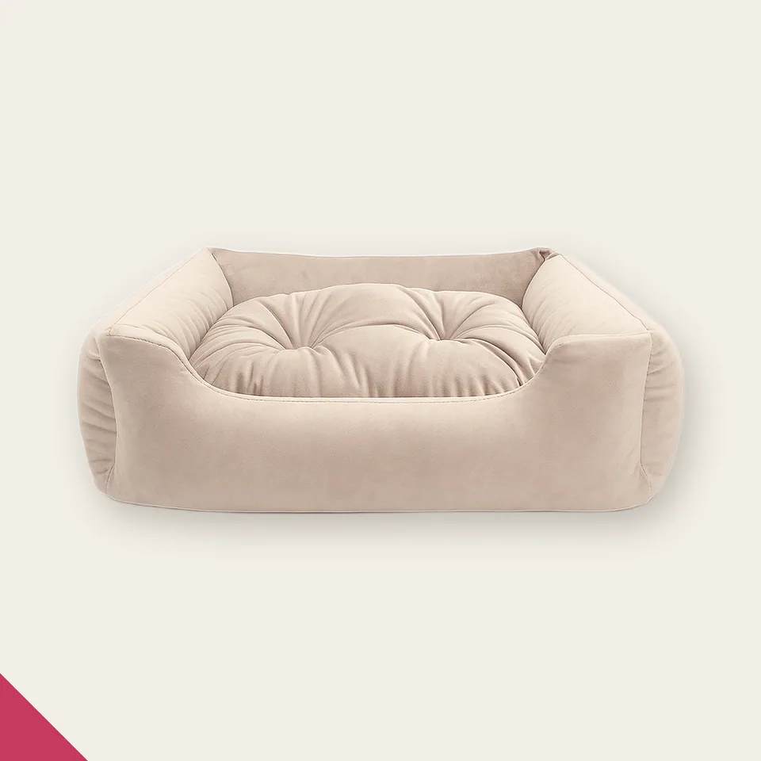
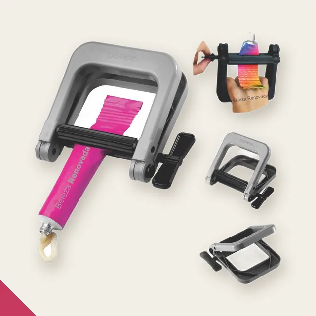
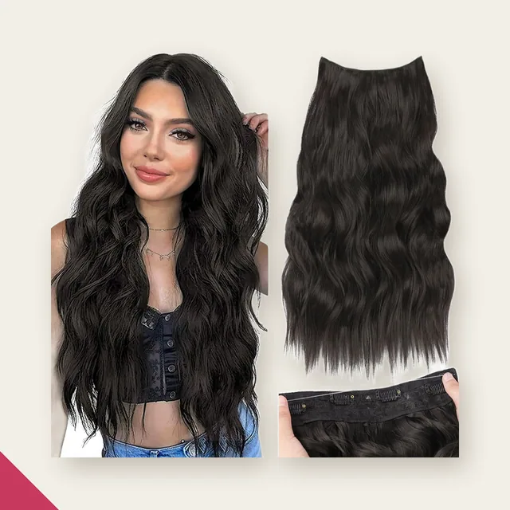
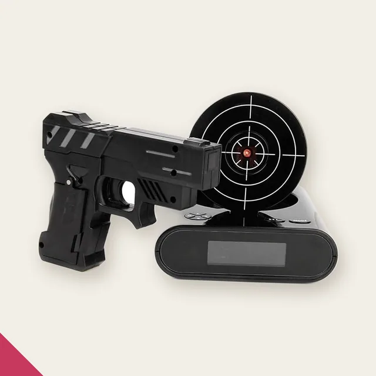
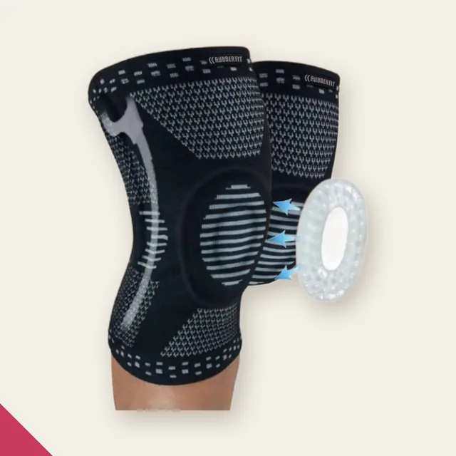
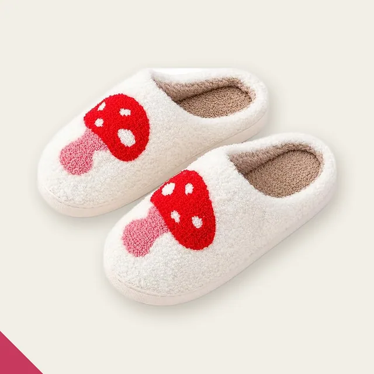
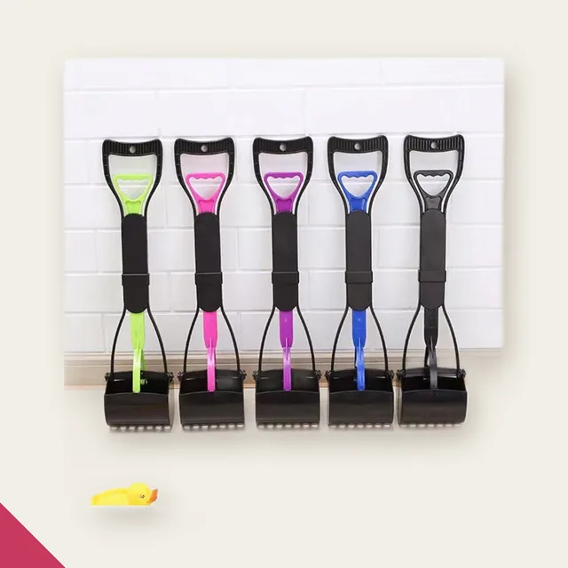
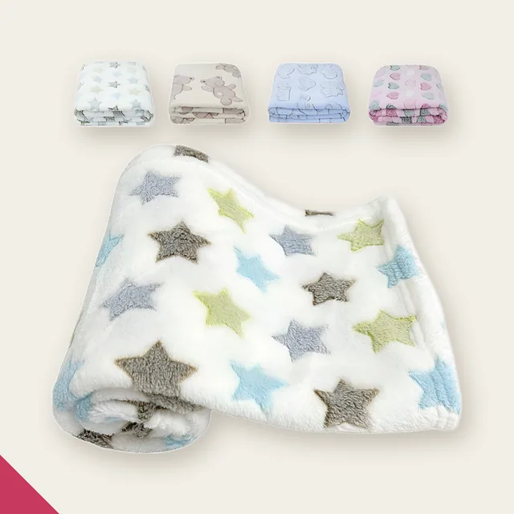
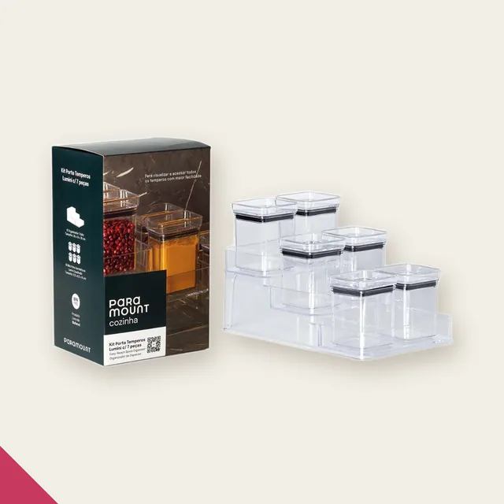
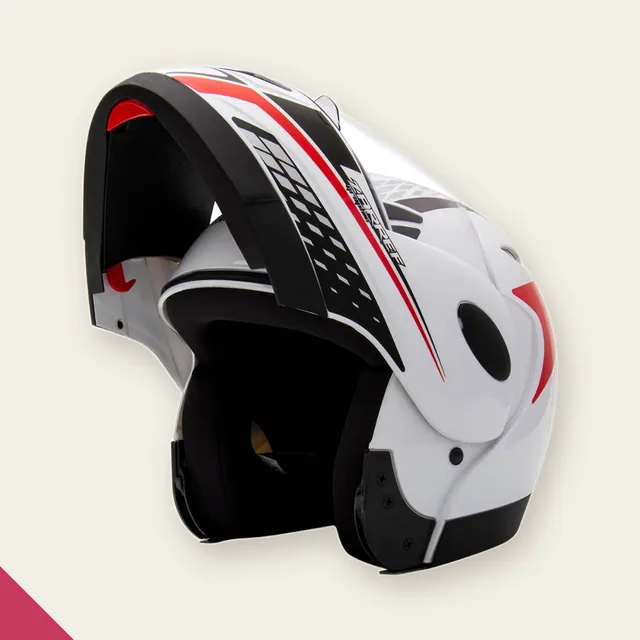

Nem tudomerece suaatenção.
A gente encontra o que merece.
263achados no ar
preço conferido em 02/09

Baixou de preço
27% mais barato-27%
Caminha Pet Pequena com Almofada Removível e Zíper
~R$ 50,69R$ 119,99
caiu 27% na semana · média de 7 diasVer na loja →Por onde você quer começar

Cozinha40 achados
Beleza37 achados
Tech60 achados
Fitness6 achados
Moda32 achados
Pet5 achados
Utilidades28 achados
Casa39 achados
Outros16 achadosA gente confere esses preços todo dia.
Quando uma peça baixa de verdade, ela vai pro grupo na hora — com o link já pronto. É de graça e você sai quando quiser.
Entrar no grupo →263 achados no ar · preços conferidos em 02/09/2026 · 7 dias de histórico de preço · link que morre sai sozinho